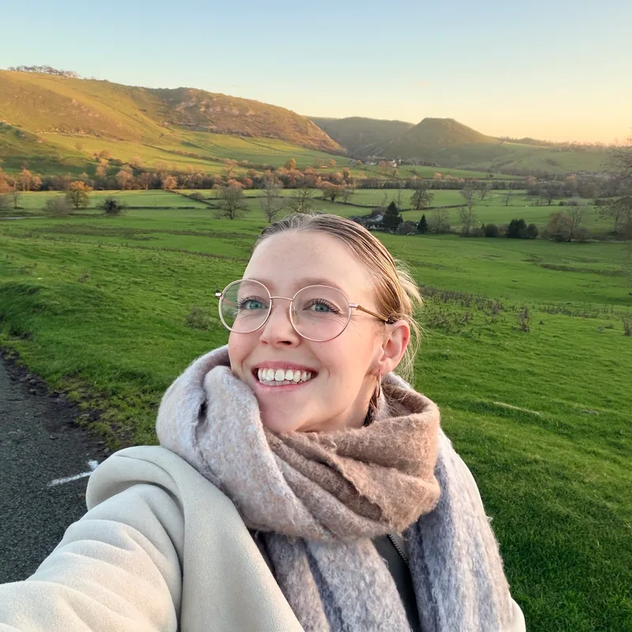
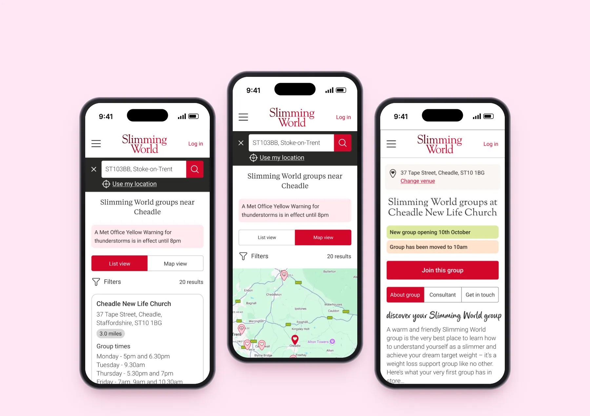
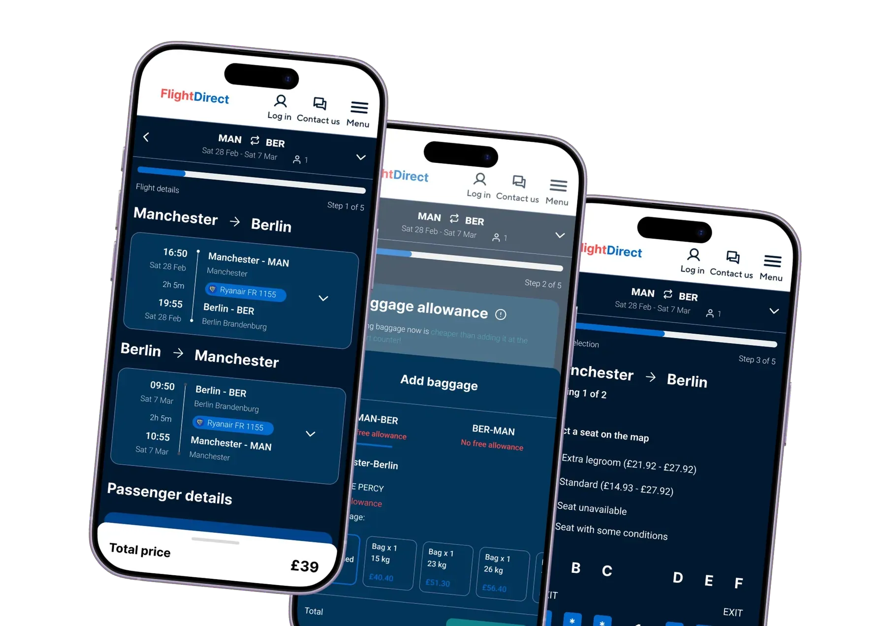
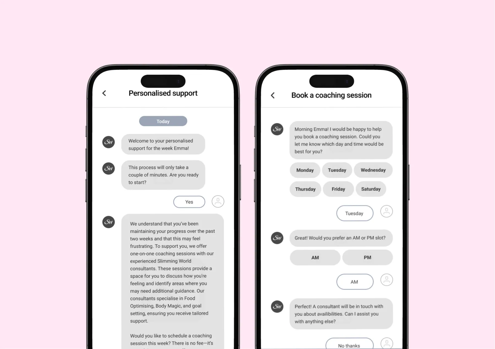
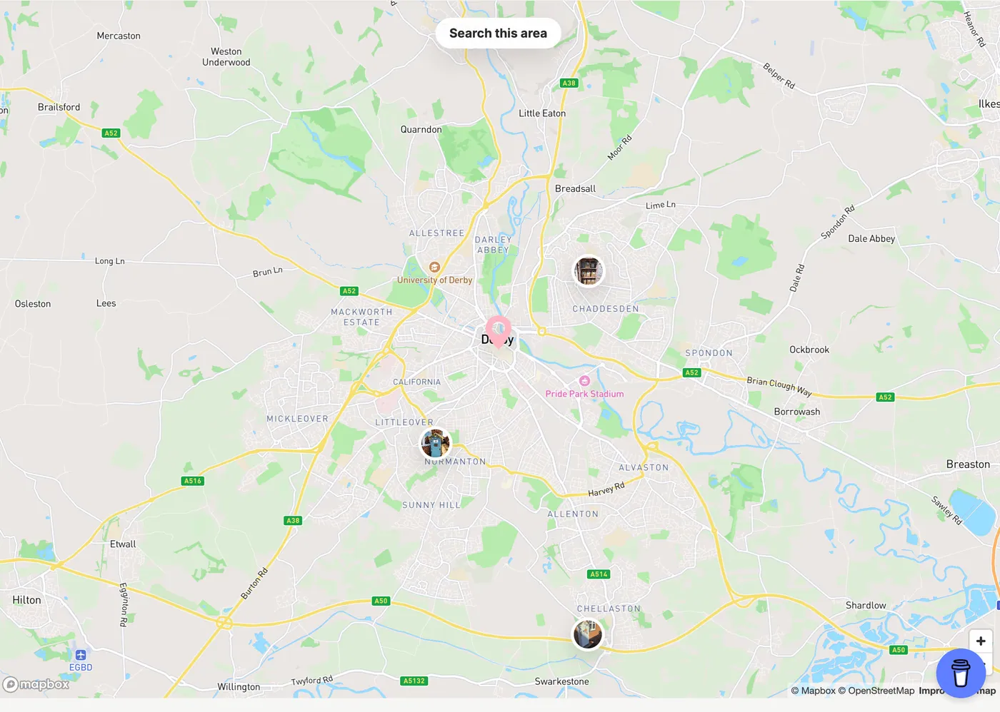
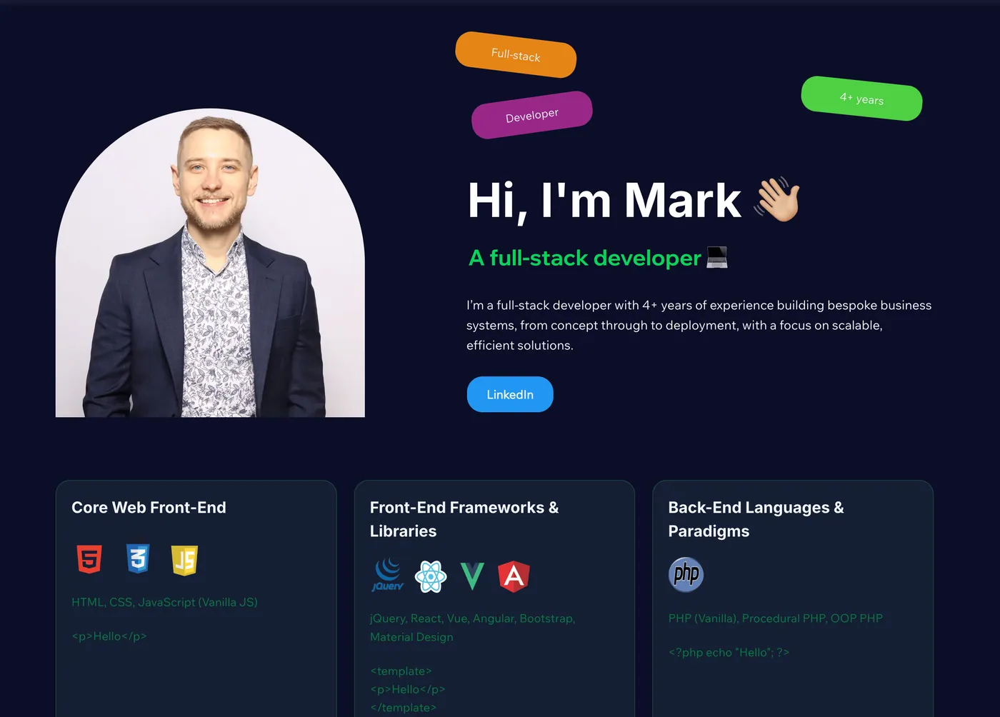
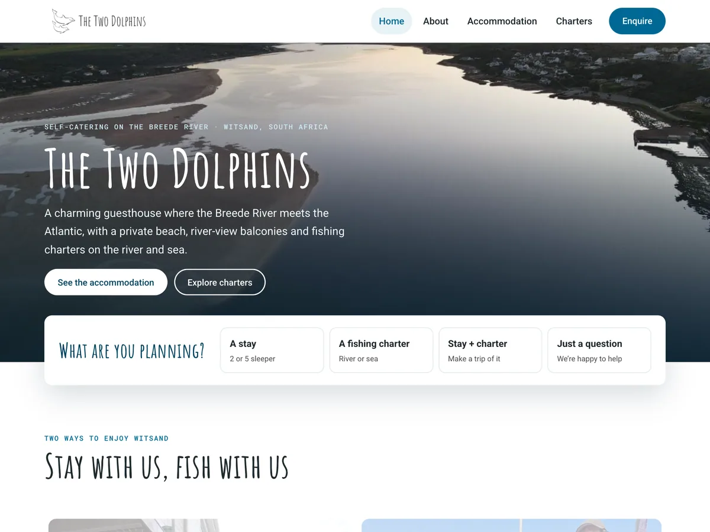
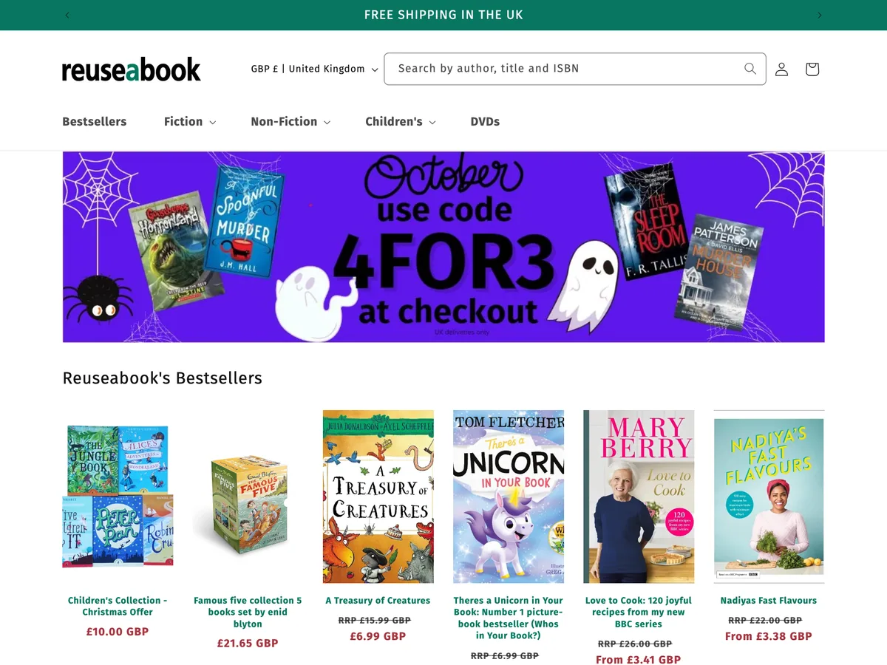
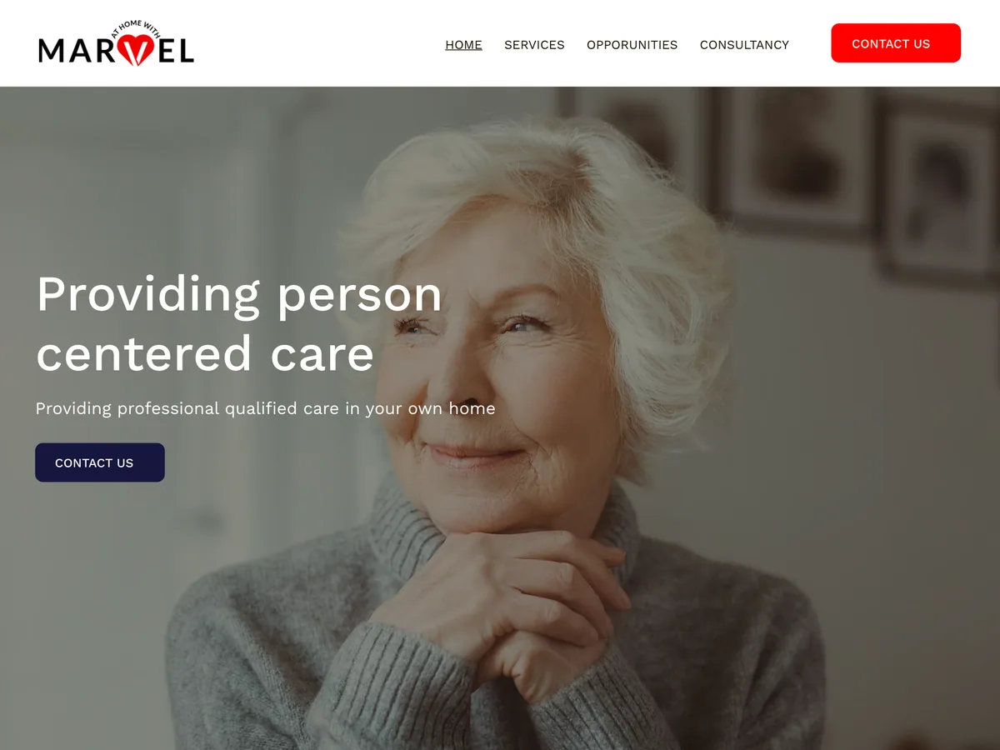

Hi, I'm Michelle, a product designer
Product designer with a background in psychology, education & front‑end development. An empathetic designer, data‑driven problem solver and collaborative communicator who creates intuitive, user‑focused digital experiences.

Featured case studies
-
Slimming World
Researching and designing a new group search experience for potential members
A research and design project focused on enhancing the group search experience by evaluating user needs, identifying barriers to group discovery, and validating solutions through usability testing.
- Research
- UX design

-
Personal project
From search to booking: a seamless travel experience
Understanding how people move from comparison sites to booking flights, and designing a simple, trustworthy journey with relevant upsell opportunities.
- Research
- UX/UI design

-
Slimming World
Exploring digital coaching for weight management
Evaluating the value of adding an AI-powered coaching feature by analysing industry trends, competitor approaches and potential benefits for the online member experience.
- Exploratory research
- UX design

How I work
-
Psychology-led empathy
Understanding why people behave the way they do: motivation, habits and behaviour change, so designs support real needs.
-
Data-driven decisions
Surveys, support data, competitor and literature reviews: evidence first, then design, then test and iterate.
-
Design that ships
A front-end development background means designs that are realistic to build, and websites I've built myself.
Websites I've built
-

CakeSheds
Designing and developing the CakeSheds local finder.
- UX/UI design
-

Developer Portfolio
Designing and developing a single page portfolio website for a developer.
- UX/UI design
- Wix
-

The Two Dolphins
Designing and developing the website for a guesthouse in South Africa.
- UX/UI design
- Front-end dev
-

Reuseabook
Redesigning and developing an e-commerce platform for used books.
- Research
- Shopify
- Front-end dev
-

At Home with Marvel
Redesigning and developing a single page website for a care company.
- UX/UI design
- Wix